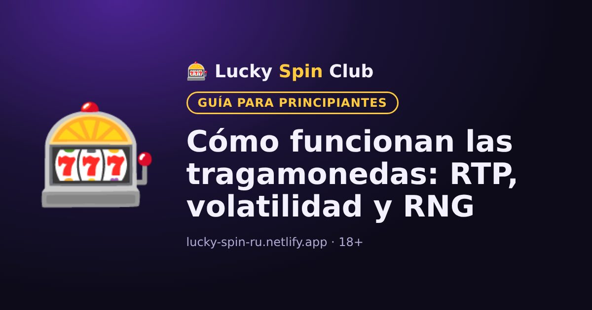

Cómo funcionan las tragamonedas: RTP, volatilidad y RNG

Las tragamonedas son los juegos más populares del casino. Veamos cómo funcionan para jugar con conocimiento.
Generador de números aleatorios (RNG)
Cada giro lo decide un generador de números aleatorios. Cada giro es independiente de los anteriores: la máquina no «recuerda» las pérdidas ni «debe» dar un premio. No existen esquemas ganadores para las tragamonedas.
RTP: retorno al jugador
El RTP indica qué parte de todas las apuestas devuelve la máquina a los jugadores a muy largo plazo. Por ejemplo, un RTP del 96 % significa que, de media, de cada 100 $ apostados se devuelven 96 $ en premios y 4 $ son la ventaja del casino. A corto plazo el resultado puede variar mucho en cualquier dirección.
Volatilidad
- Baja: premios frecuentes pero pequeños.
- Media: equilibrio entre frecuencia y tamaño.
- Alta: premios raros pero pueden ser grandes. El saldo puede bajar durante mucho tiempo.
Funciones de bonificación
Muchas tragamonedas tienen giros gratis, multiplicadores y rondas de bonificación. Siempre se describen en la sección «Reglas» o «Tabla de pagos» del juego; revísala antes de empezar.
Consejo
Prueba el modo demo si está disponible: así conoces el juego sin arriesgar dinero.
¿Quieres probar? El registro toma alrededor de un minuto.
🎁 Registrarse y obtener el bonoPreguntas frecuentes
¿Se puede predecir un premio en una tragamonedas?
No. Cada giro lo decide un generador de números aleatorios y no depende de los anteriores.
¿Qué significa un RTP del 96 %?
A muy largo plazo la máquina devuelve de media el 96 % de todas las apuestas. A corto plazo el resultado puede variar mucho.
¿Qué tragamonedas convienen a los principiantes?
A los principiantes suelen convenirles las de volatilidad baja o media: los premios llegan más a menudo, aunque son menores. Puedes probar el modo demo antes de jugar con dinero.